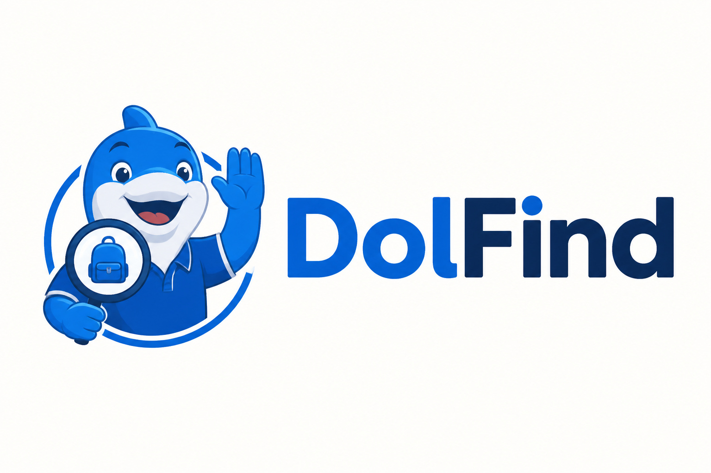
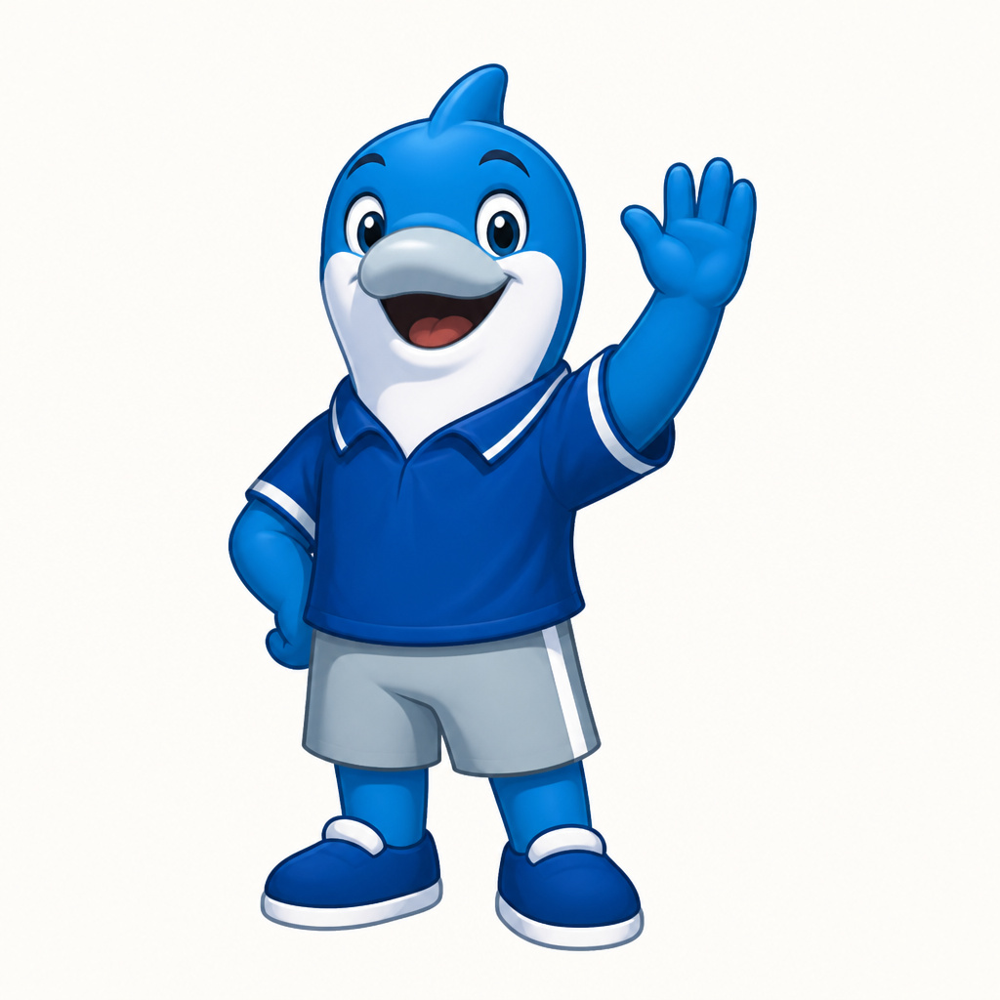

Look around
Search reports for a familiar item or the place you last saw it.

THE PCU LOST & FOUND COMMUNITY
From the notebook you left behind to the keys someone picked up. Find what matters, with a little help from your campus.
Open to browse. School email required to report.

THE CAMPUS NOTICEBOARD
Every card has a story.
Open a report to see the details.
Categories are temporarily unavailable. You can still search and browse reports.
Try a different word or clear your filters. If your item isn’t here, you can create a report.
A LITTLE KINDNESS, A SIMPLE PROCESS
Search reports for a familiar item or the place you last saw it.
Compare the description, location, and date before identifying an item as yours.
Verify ownership and arrange handovers through your campus lost-and-found office.